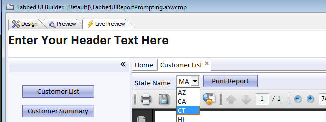
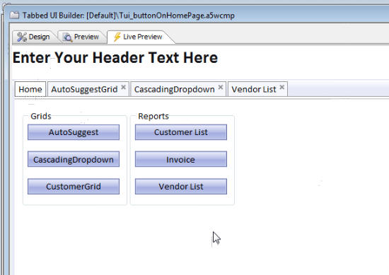

Tabbed UI Component
For an introduction to the Tabbed UI Component, see video number 25 in the V10 Web Applications VideosAdditional notes:
Web Applications - Tabbed UI - Reports
Prompt For Parameters at Runtime - Previously, if a report prompted for parameters at runtime, the prompt dialog would use a textbox control for all parameter types. Now, you can use dropdown boxes, radio buttons and logical checkboxes. Furthermore, the choices for the controls can be dynamically populated from a .dbf or SQL table. In the case of date/time parameters, the textbox where the user enters the parameter value can now have a date picker. The image below shows how the prompt for the state name has been configured to be a Dropdownbox control and the list of states is dynamically obtained from a table.

The following videos show a demonstration of this feature:
Tabbed UI Component - Printing Reports - You can now reference session variables in the report filter. Previously you needed to bind an argument to the session variable and then use the argument in filter. While this method still works (and is preferred), some users might find it more convenient to reference the session variable directly in the report filter.
There is a distinct advantage to using arguments (as opposed to referencing session variables directly in the filter), because all type conversion issues are automatically handled for you by Alpha Five. If you reference a session variable in the filter directly, you are responsible for data type conversion.
Example report filters that use session variables:
state = "session.whatstate"
For a numeric field:
balance = session.whatamount
For a time field (assuming that session.whattime is a character variable):
orderdate = ctodt(session.whattime)
Tabbed UI Component - New Javascript Events in Tabbed UI - You can now set event handlers for these events on an individual tab pane in the Tabbed UI Component
- onBeforeChange
- on
change - onRightClick
- onInitial
- onBeforeRemove
- onRemove
In the case where a tab pane is showing a Grid component, in your Javascript event handler, you can get a pointer to the Grid object that is shown in the pane as follows:
var gridObj = windowpaneObj.name + '_GridObj';
Once you have a pointer to the Grid object, you can then call methods on the Grid.
Tabbed UI and Page Layout Component - Multiple Language Support - The same multiple-language features that are supported in the Grid component have now been added to the Tabbed UI and Page Layout Builder.
Web Applications - Tabbed UI Component - Using a Page Layout for Tabbed UI Buttons - The standard way for designing a Tabbed UI component is to place the buttons that open new tabs in a button section that is placed on the left or right of the screen. Now, there is a new way in which you can configure a Tabbed UI component by placing buttons in a page that is typically displayed in the 'Home' tab of the Tabbed UI, or in any other tab of the Tabbed UI. This is done by using a Page Layout component with a series of buttons on it and then placing the Page Layout in a tab in the Tabbed UI component.
The image below shows a Page Layout component displayed in the Home tab of a Tabbed UI component. Each button on the Page Layout component will open a new tab in the Tabbed UI component.

To accomplish this, there is a new option in the Page Layout builder. When you place an object on the Page Layout, set the 'Show mode' to 'When button is clicked' and then set the 'Window type' to 'Tabbed UI Pane'. The 'Re-use existing pane' option is also checked. This means that if you press the button to launch the component, and it has already been opened, the Tabbed UI pane that contains the component will simply get focus.